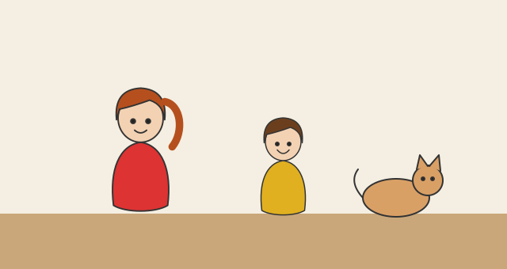

Zu wem gehört es? his, her, its
Mit einem KI-Tutor lernen
Ein KI-Tutor erklärt dir diese Seite und hilft dir bei den Aufgaben. Wähl deinen Assistenten:
Mit Claude öffnen Mit ChatGPT öffnen Mit Mistral Vibe öffnen
Du nutzt dein eigenes Konto beim Anbieter. Der Assistent ist kein Angebot von lernapps.net: lernapps liefert nur Inhalte und Aufgaben. Die Wahl gilt für alle Seiten, nur auf diesem Gerät.
Ellie, Peter und die Katze

Ellie, Peter und die Katze.
Quelle: eigene Zeichnung. Lizenz: CC-BY-4.0.Mrs Parker holt die Kinder ab. Sophie sagt: „Peter can see his hat.“ Das heißt: „Peter kann seinen Hut sehen.“ brother heißt „Bruder“, sister „Schwester“, cat „Katze“, mother „Mutter“, pen „Stift“, cap „Mütze“, and „und“ und the „der, die, das“.
Das kannst du danach: Du sagst auf Englisch, wem etwas gehört, auch mit his, her und its, und füllst die ganze Pronomen-Tabelle aus.
Aufgabe
Lösung
Ellies Fahrrad
Für ein Fahrrad von Ellie würde Sophie her sagen, denn Ellie ist ein Mädchen.
Amirs Fahrrad richtige Antwort
his gehört zu einem Jungen. Der Junge im Satz ist Amir.
Sophies Fahrrad
Für ein Fahrrad von Sophie würde Sophie my sagen.
his meint das Fahrrad eines Jungen oder Mannes, hier Amirs.
Die Person bestimmt das Wort
Bei he, she und it brauchst du his, her und its. his heißt „sein“, her „ihr“ und its „sein“ für ein Ding oder Tier. Das Wort richtet sich nach der Person, zu der etwas gehört, nicht nach der Person oder Sache, die dazugehört. Ellie und Peter haben dieselbe Mutter. Über Ellie sagt man „her mother“, über Peter sagt man „his mother“, obwohl es dieselbe Frau ist.

Der Pfeil geht von der Person zu ihrem Hut. Das Wort über dem Pfeil richtet sich nach der Person am Anfang des Pfeils, nicht nach der Person oder Sache am Ende des Pfeils.
Quelle: eigene Zeichnung. Lizenz: CC-BY-4.0.| Person | Wer tut es? | Wen trifft es? | Zu wem gehört es? |
|---|---|---|---|
| ich | I | me | my |
| du / ihr | you | you | your |
| er | he | him | his |
| sie (ein Mädchen) | she | her | her |
| es | it | it | its |
| wir | we | us | our |
| sie (mehrere) | they | them | their |
Merke
his gehört einem Jungen oder Mann, her einem Mädchen oder einer Frau, its einem Ding oder Tier: Ellie can see her hat. Peter can see his phone. The dog can see its bike. Dein Blick geht zur Person, zu der es gehört, nicht zur Person oder Sache, die dazugehört. her steht in der zweiten und in der dritten Spalte. its schreibst du ohne Apostroph: it's ist die Kurzform von „it is“.
Übung
Aufgabe
Lösung
his
his ist für einen Jungen oder Mann. Ellie ist ein Mädchen, also her.
her richtige Antwort
her ist für ein Mädchen oder eine Frau.
its
its ist nur für Dinge und Tiere.
Für Ellie, ein Mädchen, sagst du her.
Aufgabe
Lösung
her
Peter ist ein Junge, also his, auch wenn seine Schwester ein Mädchen ist.
its
its ist nur für Dinge und Tiere.
his richtige Antwort
his gehört zu einem Jungen. Es kommt auf Peter an, nicht auf seine Schwester.
Es kommt auf Peter an, einen Jungen, also his.
Aufgabe
Schreibe den Satz auf Englisch.
- Ellie kann ihren Bruder sehen.
- Peter kann seine Jacke sehen.
- Die Katze kann ihren Ball sehen.
- Ich kann meinen Bruder sehen.
Lösung
- Ellie can see her brother.
- Peter can see his jacket.
- The cat can see its ball.
- I can see my brother.
Aufgabe
Lösung
Richtige Antwort: Die Aussage stimmt nicht.
Es geht um Peter, einen Jungen, also his sister.
Aufgabe
Schreibe den Satz auf Englisch. Jedes Pronomen gehört in eine andere Spalte der Tabelle.
- Sie (Ellie) kann ihn (Peter) und seine Jacke sehen.
- Sie (Peter und Amir) können uns und unseren Ball sehen.
Lösung
- She can see him and his jacket.
- They can see us and our ball.
Aufgabe
Hör zu und schreibe, was du hörst.
- KI
- KI
- KI
Lösung
- Ellie can find her pen.
- Amir can find his cap.
- Mr Hill can see his bag.
Aufgabe
Ergänze die ganze Tabelle ohne nachzusehen.
| Person | Wer tut es? | Wen trifft es? | Zu wem gehört es? |
|---|---|---|---|
| ich | I | … | … |
| du / ihr | you | … | … |
| er | … | … | … |
| sie (ein Mädchen) | … | … | … |
| es | … | … | … |
| wir | we | … | … |
| sie (mehrere) | … | … | … |
Lösung
- ich · I · me · my
- du / ihr · you · you · your
- er · he · him · his
- sie (ein Mädchen) · she · her · her
- es · it · it · its
- wir · we · us · our
- sie (mehrere) · they · them · their
Selbst sagen und schreiben
Aufgabe
Hör zu, sprich nach und nimm dich auf. Vergleiche dann mit dem Original.
Tipp
Hör das Beispiel zuerst. Sprich dann langsam nach und vergleiche deine Aufnahme mit dem Original.
- Sophie can find her cap.KI
- Amir can see his pen.KI
- The dog can find its bag.KI
Zum Aufnehmen braucht diese Aufgabe JavaScript. Die Beispiele kannst du auch ohne anhören.
Lösung
- Sophie can find her cap.
- Amir can see his pen.
- The dog can find its bag.
Offene Aufgabe
Schreibe zwei kurze Sätze über Ellie und Peter. Benutze can see. In jedem Satz sagt ein Pronomen, wem etwas gehört.
Eine gute Antwort enthält:
Lösung
Ellie can see her brother. Peter can see his jacket.
Rückblick und wie es weitergeht
Das Poster hat jetzt drei Spalten mit den Fragen Wer tut es? Wen trifft es? Zu wem gehört es? Du weißt: Wer etwas tut, sagt I, he, she, we, they. Wen es trifft, sagt me, him, her, us, them. Wem etwas gehört, sagt my, your, his, her, its, our, their. Damit kannst du jetzt für jede Person sagen, wer etwas tut, wen es trifft und wem etwas gehört.
Fehler gefunden oder eine Idee für diese App?